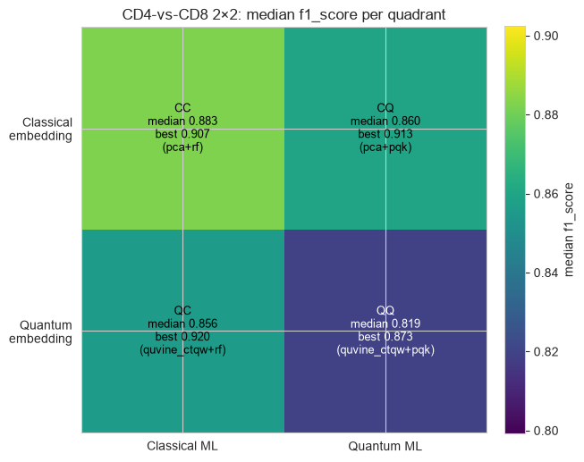
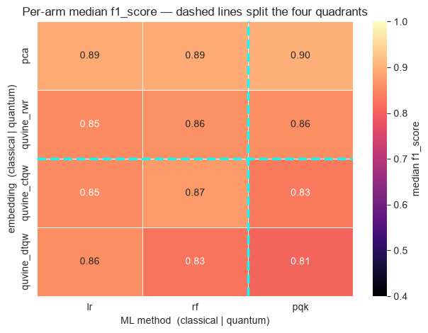
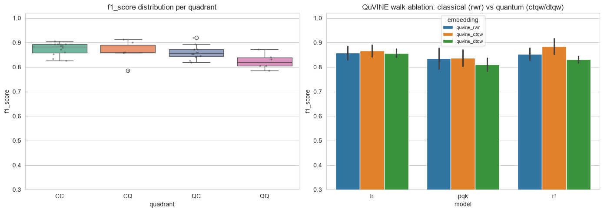

QProfiler CC/CQ/QC/QQ 2×2 on CD4-vs-CD8 — classical vs quantum embeddings × classical vs quantum ML#
The full 2×2 quadrant benchmark on the one discriminative single-cell binary task, CD4 vs CD8 T cells. The two axes are:
Embedding type — Classical (
pca, nmf, umap, isomap, lle+ the classical-walk ablationquvine_rwr, plusnode2vec, graphsage, baseline_filter_*) vs Quantum (QuVINE quantum-walk embeddingsquvine_ctqw, quvine_dtqwand the quantum-calibrated diffusion filtersfilter_ctqw_heat, filter_dtqw_heat).ML-method type — Classical (
lr, svc, rf, mlp, nb, dt, xgb) vs Quantum (pqk, qsvc, vqc, qnn).
That gives four quadrants:
Classical ML |
Quantum ML |
|
|---|---|---|
Classical embedding |
CC |
CQ |
Quantum embedding |
QC |
QProfiler already benchmarks the full embeddings × model cross-product, so the entire 2×2 falls out of one config run — we just tag each result row by quadrant afterward.
QuVINE embeddings are wired into QProfiler’s get_embeddings by name (any quvine_* / node2vec / graphsage / filter_* method). QuVINE is transductive: it embeds every node of a graph at once. We build one kNN cell graph over the concatenated train+test features, embed all cells once, then slice the rows back into train/test by construction order. Only feature-derived structure enters the graph — the class label never does — so this is the standard transductive protocol (the
same all-cells-at-once embedding the QuVINE tutorial uses), not label leakage.
Dropped on purpose: the
gat_*/graphgps_*walk families. Their walk variant is compressed into a single calibrated heat-time scalart, which collapses the ctqw/dtqw/rwr distinction — so they add cost without a real quantum-walk signal here. The cheaperfilter_*diffusion arm is kept as the quantum-calibrated representative (with the caveat thatfilter_ctqwvsfilter_dtqwmay still converge for the same reason).
Install. QuVINE ships behind an optional extra, so a plain pip install qbiocode does not pull its dependencies (gensim, hiperwalk, node2vec, torch-geometric, python-louvain, ripser, omegaconf). Install it with:
pip install "qbiocode[quvine]"
Calling a quvine_* method without the extra raises an error naming the missing package and this exact command, rather than a bare ModuleNotFoundError.
This notebook also reads an .h5ad fixture, so it needs anndata — part of the base install.
1. Setup and imports#
[1]:
import os
import sys
import shutil
import glob
import yaml
import numpy as np
import pandas as pd
import anndata as ad
import matplotlib.pyplot as plt
import matplotlib.patches as mpatches
import seaborn as sns
import qbiocode as qbc
from qbiocode.apps.qprofiler import qprofiler as profiler
from qbiocode.utils import tutorial_data_path
sns.set_style("whitegrid")
# ---- Paths ----
# The cd4_vs_cd8 fixture is committed once and shared with the QProfiler and QuVINE
# tutorials; tutorial_data_path() finds it in whichever tree holds it (it searches
# $QBC_DATA first, then every fixture directory of a source checkout) and raises a
# FileNotFoundError naming each directory tried. export_task_csv() below wants the
# containing directory, not the file.
H5AD_DIR = os.path.dirname(tutorial_data_path("pbmc5k_small_cd4_vs_cd8.h5ad"))
NB_DIR = os.getcwd() # this notebook's own directory (portable across docs/ and tutorial/)
DATA_DIR = os.path.join(NB_DIR, "data", "sc_binary") # per-task CSVs written here
# The config template ships as package data, so read it out of the installed package
# rather than deriving a repo root from qbc.__file__ -- that only resolves for an
# editable install and silently points into site-packages for a normal one.
CONFIG_TEMPLATE = os.path.join(
os.path.dirname(os.path.abspath(profiler.__file__)), "configs", "config.yaml")
OUT_DIR = NB_DIR # ModelResults.csv etc. land here
os.makedirs(DATA_DIR, exist_ok=True)
# QProfiler writes outputs to the current working directory -> pin it to OUT_DIR.
os.chdir(OUT_DIR)
print("qbiocode", qbc.__version__)
print("cwd (outputs):", os.getcwd())
<env>/lib/python3.12/site-packages/tqdm/auto.py:21: TqdmWarning: IProgress not found. Please update jupyter and ipywidgets. See https://ipywidgets.readthedocs.io/en/stable/user_install.html
from .autonotebook import tqdm as notebook_tqdm
qbiocode 0.1.0
cwd (outputs): <repo>/tutorial/QProfiler
2. Configuration — the four axes + a FULL_GRID toggle#
The canonical Classical (C) and Quantum (Q) method lists for each axis are fixed below — they define which quadrant every result lands in. FULL_GRID chooses how much of each axis actually runs:
FULL_GRID = False(default): a tractable subset — a couple of embeddings and models per axis, withpqkas the sole quantum ML. Still covers all four quadrants, runs on a laptop in minutes.FULL_GRID = True: every embedding × every model — much slower, since quantum ML on the local statevector simulator dominates the runtime (14 embeddings × 11 models ×ITERsplits).
[2]:
# ============================ EXPERIMENT CONFIG ============================
TASK = "cd4_vs_cd8" # the only discriminative task (others saturate at ~1.0)
LEAKAGE_SAFE = True # drop label-defining marker genes
N_FEATURES = 50 # top-variance HVGs exported (keeps compute light)
N_COMPONENTS = 8 # embedding width == qubit count for PQK/quantum encoders
ITER = 3 # train/test splits per (embedding, model)
TEST_SIZE = 0.3
# ---- Canonical axis definitions (these decide the quadrant of every arm) ----
# Classical embeddings: sklearn reductions + graph embeddings whose walk is classical.
# quvine_rwr is the classical random-walk ABLATION of the quantum walks (same pipeline).
C_EMB = ["pca", "nmf", "umap", "isomap", "lle",
"quvine_rwr", "node2vec", "graphsage",
"baseline_filter_heat", "baseline_filter_poly"]
# Quantum embeddings: QuVINE quantum-walk SGNS + quantum-calibrated diffusion filters.
Q_EMB = ["quvine_ctqw", "quvine_dtqw", "filter_ctqw_heat", "filter_dtqw_heat"]
C_ML = ["lr", "svc", "rf", "mlp", "nb", "dt", "xgb"] # classical models
Q_ML = ["pqk", "qsvc", "vqc", "qnn"] # quantum models
# ---- What actually runs ----
FULL_GRID = False
if FULL_GRID:
EMB = C_EMB + Q_EMB
ML = C_ML + Q_ML
else:
# One+ representative per family so all four quadrants are populated but cheap.
EMB = ["pca", "quvine_rwr", # classical embeddings (incl. classical-walk ablation)
"quvine_ctqw", "quvine_dtqw"] # quantum-walk embeddings
ML = ["lr", "rf", # classical ML
"pqk"] # quantum ML (statevector sim; the slow arm)
# PQK feature-map tuning: a SHALLOW linearly-entangled ZZ map (reps=1) avoids the
# quantum-kernel concentration the deep template default suffers -- higher accuracy, ~3x faster.
PQK_ARGS = {"encoding": "ZZ", "entanglement": "linear", "primitive": "estimator", "reps": 1}
# QuVINE overrides forwarded to embed(). `dimension` is forced to N_COMPONENTS automatically.
# steps is kept small: quantum walks spread ballistically, so large step counts over-mix and
# wash out same-class structure.
QUVINE_ARGS = {"walks": {"steps": 4, "num_walks": 10, "walk_length": 10},
"train": {"epochs": 50},
"views": {"num_views": 4}}
N_NEIGHBORS = 15 # neighbors for the kNN cell graph QuVINE embeds on
# ===========================================================================
Q_EMB_SET, Q_ML_SET = set(Q_EMB), set(Q_ML)
def quadrant(emb, model):
return ("Q" if emb in Q_EMB_SET else "C") + ("Q" if model in Q_ML_SET else "C")
print("FULL_GRID:", FULL_GRID)
print("embeddings:", EMB)
print("models :", ML)
print("quadrants that will appear:",
sorted({quadrant(e, m) for e in EMB for m in ML}))
print(f"n_components={N_COMPONENTS} | iters={ITER} | combos={len(EMB)*len(ML)}")
FULL_GRID: False
embeddings: ['pca', 'quvine_rwr', 'quvine_ctqw', 'quvine_dtqw']
models : ['lr', 'rf', 'pqk']
quadrants that will appear: ['CC', 'CQ', 'QC', 'QQ']
n_components=8 | iters=3 | combos=12
3. Build the CD4-vs-CD8 CSV#
QProfiler reads plain CSVs (features in columns, label in the last column). We export the CD4-vs-CD8 task from the small balanced h5ad (500 cells, 250/class), keeping the top N_FEATURES high-variance HVGs and dropping the label-defining markers when LEAKAGE_SAFE. This is the same leakage-safe export used by the sc_binary_qprofiler.ipynb tutorial.
[3]:
def export_task_csv(task, n_features, leakage_safe, data_dir, h5ad_dir):
"""Write pbmc-<task>.csv (top-variance HVGs + label) and return (path, info)."""
adata = ad.read_h5ad(os.path.join(h5ad_dir, f"pbmc5k_small_{task}.h5ad"))
keep = adata.var["highly_variable"].to_numpy().copy()
if leakage_safe and "is_label_leakage" in adata.var:
keep &= ~adata.var["is_label_leakage"].to_numpy()
X = adata[:, keep].X
X = np.asarray(X.todense()) if hasattr(X, "todense") else np.asarray(X)
genes = adata.var_names[keep].to_numpy()
order = np.argsort(X.var(axis=0))[::-1][:n_features]
X_sel, genes_sel = X[:, order], genes[order]
df = pd.DataFrame(X_sel, columns=list(genes_sel))
df["label"] = adata.obs["label"].astype(str).to_numpy() # label MUST be last column
path = os.path.join(data_dir, f"pbmc-{task}.csv")
df.to_csv(path, index=False)
info = {"task": task, "n_cells": df.shape[0], "n_features": len(genes_sel),
"classes": df["label"].value_counts().to_dict()}
return path, info
csv_path, info = export_task_csv(TASK, N_FEATURES, LEAKAGE_SAFE, DATA_DIR, H5AD_DIR)
print(info)
print("CSV ->", csv_path)
{'task': 'cd4_vs_cd8', 'n_cells': 500, 'n_features': 50, 'classes': {'CD4_T': 250, 'CD8_T': 250}}
CSV -> <repo>/tutorial/QProfiler/data/sc_binary/pbmc-cd4_vs_cd8.csv
4. Assemble the QProfiler config#
Start from the shipped template (so every model-arg block is present) and override our choices. embeddings = EMB and model = ML make QProfiler run the full cross-product; quvine_args / n_neighbors are threaded through to the QuVINE embeddings.
[4]:
config = yaml.safe_load(open(CONFIG_TEMPLATE))
config.update({
"folder_path": os.path.abspath(DATA_DIR),
"file_dataset": [f"pbmc-{TASK}.csv"],
"embeddings": EMB,
"model": ML,
"n_components": N_COMPONENTS,
"n_neighbors": N_NEIGHBORS,
"iter": ITER,
"test_size": TEST_SIZE,
"stratify": ["y"],
"scaling": ["True"],
"n_jobs": 1,
"grid_search": False,
"backend": "simulator", # only used by the quantum models
})
config["pqk_args"] = PQK_ARGS
config["quvine_args"] = QUVINE_ARGS
print("file_dataset:", config["file_dataset"])
print("embeddings :", config["embeddings"])
print("models :", config["model"])
print("pqk_args :", config["pqk_args"])
print("quvine_args :", config["quvine_args"])
file_dataset: ['pbmc-cd4_vs_cd8.csv']
embeddings : ['pca', 'quvine_rwr', 'quvine_ctqw', 'quvine_dtqw']
models : ['lr', 'rf', 'pqk']
pqk_args : {'encoding': 'ZZ', 'entanglement': 'linear', 'primitive': 'estimator', 'reps': 1}
quvine_args : {'walks': {'steps': 4, 'num_walks': 10, 'walk_length': 10}, 'train': {'epochs': 50}, 'views': {'num_views': 4}}
5. Run QProfiler#
QProfiler appends to ModelResults.csv, RawDataEvaluation.csv, and results.pkl in the working directory, so we clear stale outputs first. PQK caches its projections keyed by dataset/embedding/iter — not by pqk_args — so we purge pqk_projections/ too, otherwise a stale cache would silently mask a feature-map change.
With
FULL_GRID = Truethis cell can run for a long time (quantum ML on the simulator). Start with the default subset to sanity-check the pipeline.
[5]:
for f in ["ModelResults.csv", "RawDataEvaluation.csv", "results.pkl"]:
if os.path.exists(f):
os.remove(f)
shutil.rmtree("pqk_projections", ignore_errors=True)
profiler.main(config)
model_results = pd.read_csv("ModelResults.csv")
model_results["quadrant"] = [quadrant(e, m) for e, m
in zip(model_results["embeddings"], model_results["model"])]
print("ModelResults:", model_results.shape)
print("quadrants present:", sorted(model_results["quadrant"].unique()))
model_results[["embeddings", "model", "quadrant", "iteration",
"accuracy", "f1_score", "auc"]].head(12)
Processing file: pbmc-cd4_vs_cd8.csv
at datapoint 0
at datapoint 100
at datapoint 200
at datapoint 300
at datapoint 0
at datapoint 100
Exception ignored in: 'gensim.models.word2vec_inner.our_dot_float'
at datapoint 0
at datapoint 100
at datapoint 200
at datapoint 300
at datapoint 0
at datapoint 100
Exception ignored in: 'gensim.models.word2vec_inner.our_dot_float'
Exception ignored in: 'gensim.models.word2vec_inner.our_dot_float'
at datapoint 0
at datapoint 100
at datapoint 200
at datapoint 300
at datapoint 0
at datapoint 100
Exception ignored in: 'gensim.models.word2vec_inner.our_dot_float'
Exception ignored in: 'gensim.models.word2vec_inner.our_dot_float'
Exception ignored in: 'gensim.models.word2vec_inner.our_dot_float'
Exception ignored in: 'gensim.models.word2vec_inner.our_dot_float'
at datapoint 0
at datapoint 100
at datapoint 200
at datapoint 300
at datapoint 0
at datapoint 100
at datapoint 0
at datapoint 100
at datapoint 200
at datapoint 300
at datapoint 0
at datapoint 100
Exception ignored in: 'gensim.models.word2vec_inner.our_dot_float'
Exception ignored in: 'gensim.models.word2vec_inner.our_dot_float'
Exception ignored in: 'gensim.models.word2vec_inner.our_dot_float'
Exception ignored in: 'gensim.models.word2vec_inner.our_dot_float'
Exception ignored in: 'gensim.models.word2vec_inner.our_dot_float'
Exception ignored in: 'gensim.models.word2vec_inner.our_dot_float'
Exception ignored in: 'gensim.models.word2vec_inner.our_dot_float'
Exception ignored in: 'gensim.models.word2vec_inner.our_dot_float'
at datapoint 0
at datapoint 100
at datapoint 200
at datapoint 300
at datapoint 0
at datapoint 100
Exception ignored in: 'gensim.models.word2vec_inner.our_dot_float'
Exception ignored in: 'gensim.models.word2vec_inner.our_dot_float'
Exception ignored in: 'gensim.models.word2vec_inner.our_dot_float'
at datapoint 0
at datapoint 100
at datapoint 200
at datapoint 300
at datapoint 0
at datapoint 100
Exception ignored in: 'gensim.models.word2vec_inner.our_dot_float'
Exception ignored in: 'gensim.models.word2vec_inner.our_dot_float'
Exception ignored in: 'gensim.models.word2vec_inner.our_dot_float'
at datapoint 0
at datapoint 100
at datapoint 200
at datapoint 300
at datapoint 0
at datapoint 100
at datapoint 0
at datapoint 100
at datapoint 200
at datapoint 300
at datapoint 0
at datapoint 100
Exception ignored in: 'gensim.models.word2vec_inner.our_dot_float'
Exception ignored in: 'gensim.models.word2vec_inner.our_dot_float'
Exception ignored in: 'gensim.models.word2vec_inner.our_dot_float'
Exception ignored in: 'gensim.models.word2vec_inner.our_dot_float'
Exception ignored in: Exception ignored in: 'gensim.models.word2vec_inner.our_dot_float'
'gensim.models.word2vec_inner.our_dot_float'
at datapoint 0
at datapoint 100
at datapoint 200
at datapoint 300
at datapoint 0
at datapoint 100
Exception ignored in: 'gensim.models.word2vec_inner.our_dot_float'
Exception ignored in: 'gensim.models.word2vec_inner.our_dot_float'
Exception ignored in: 'gensim.models.word2vec_inner.our_dot_float'
at datapoint 0
at datapoint 100
at datapoint 200
at datapoint 300
at datapoint 0
at datapoint 100
at datapoint 0
at datapoint 100
at datapoint 200
at datapoint 300
at datapoint 0
at datapoint 100
ModelResults: (36, 33)
quadrants present: ['CC', 'CQ', 'QC', 'QQ']
[5]:
| embeddings | model | quadrant | iteration | accuracy | f1_score | auc | |
|---|---|---|---|---|---|---|---|
| 0 | pca | lr | CC | 1 | 0.893333 | 0.893029 | 0.893333 |
| 1 | pca | pqk | CQ | 1 | 0.900000 | 0.899960 | 0.900000 |
| 2 | pca | rf | CC | 1 | 0.893333 | 0.893162 | 0.893333 |
| 3 | quvine_rwr | lr | CC | 1 | 0.886667 | 0.886419 | 0.886667 |
| 4 | quvine_rwr | pqk | CQ | 1 | 0.860000 | 0.859494 | 0.860000 |
| 5 | quvine_rwr | rf | CC | 1 | 0.873333 | 0.873057 | 0.873333 |
| 6 | quvine_ctqw | lr | QC | 1 | 0.893333 | 0.893257 | 0.893333 |
| 7 | quvine_ctqw | pqk | 1 | 0.806667 | 0.805968 | 0.806667 | |
| 8 | quvine_ctqw | rf | QC | 1 | 0.920000 | 0.919943 | 0.920000 |
| 9 | quvine_dtqw | lr | QC | 1 | 0.860000 | 0.859243 | 0.860000 |
| 10 | quvine_dtqw | pqk | 1 | 0.806667 | 0.805968 | 0.806667 | |
| 11 | quvine_dtqw | rf | QC | 1 | 0.820000 | 0.819992 | 0.820000 |
6. The 2×2 quadrant summary#
Collapse every arm into its quadrant and report the median and best performance per quadrant across all arms and splits. This is the headline CC/CQ/QC/QQ comparison: does a quantum embedding (QC/QQ) or a quantum ML method (CQ/QQ) buy anything over the fully classical CC corner on this hard task?
[6]:
METRIC = "f1_score" # switch to 'accuracy' or 'auc' if preferred
# Median & best (over arms and splits) per quadrant.
med = model_results.groupby("quadrant")[METRIC].median()
best = model_results.groupby("quadrant")[METRIC].max()
# Best arm (embedding+model) per quadrant, by median over splits.
arm_med = (model_results.groupby(["quadrant", "embeddings", "model"])[METRIC]
.median().reset_index())
best_arm = arm_med.loc[arm_med.groupby("quadrant")[METRIC].idxmax()]
best_arm = best_arm.set_index("quadrant")
order = ["CC", "CQ", "QC", "QQ"]
grid_med = np.array([[med.get("CC", np.nan), med.get("CQ", np.nan)],
[med.get("QC", np.nan), med.get("QQ", np.nan)]])
grid_best = np.array([[best.get("CC", np.nan), best.get("CQ", np.nan)],
[best.get("QC", np.nan), best.get("QQ", np.nan)]])
fig, ax = plt.subplots(figsize=(6.4, 5.6))
im = ax.imshow(grid_med, cmap="viridis", vmin=np.nanmin(grid_med) - 0.02,
vmax=np.nanmax(grid_med) + 0.02)
ax.set_xticks([0, 1]); ax.set_xticklabels(["Classical ML", "Quantum ML"])
ax.set_yticks([0, 1]); ax.set_yticklabels(["Classical\nembedding", "Quantum\nembedding"])
for (i, j), q in zip([(0,0),(0,1),(1,0),(1,1)], order):
if q not in med.index:
ax.text(j, i, f"{q}\n(not run)", ha="center", va="center", color="white")
continue
ba = best_arm.loc[q]
ax.text(j, i,
f"{q}\nmedian {grid_med[i,j]:.3f}\nbest {grid_best[i,j]:.3f}\n"
f"({ba['embeddings']}+{ba['model']})",
ha="center", va="center", fontsize=9,
color="white" if grid_med[i,j] < np.nanmean(grid_med) else "black")
ax.set_title(f"CD4-vs-CD8 2×2: median {METRIC} per quadrant")
fig.colorbar(im, ax=ax, fraction=0.046, pad=0.04, label=f"median {METRIC}")
plt.tight_layout(); plt.show()
pd.DataFrame({"median": med, "best": best}).reindex(order).round(3)

[6]:
| median | best | |
|---|---|---|
| quadrant | ||
| CC | 0.883 | 0.907 |
| CQ | 0.860 | 0.913 |
| QC | 0.856 | 0.920 |
| 0.819 | 0.873 |
7. Per-arm heatmap (embedding × model), quadrants outlined#
The full resolution behind the 2×2: median f1_score for every (embedding, model) arm. Rows are grouped classical-then-quantum embeddings; columns classical-then-quantum models. The dashed lines mark the CC/CQ/QC/QQ boundaries.
[7]:
pivot = (model_results.groupby(["embeddings", "model"])[METRIC].median().unstack("model"))
# Order rows/cols classical-first, then quantum; keep only what ran.
row_order = [e for e in C_EMB + Q_EMB if e in pivot.index]
col_order = [m for m in C_ML + Q_ML if m in pivot.columns]
pivot = pivot.loc[row_order, col_order]
n_c_emb = sum(e in set(C_EMB) for e in row_order) # classical-embedding row count
n_c_ml = sum(m in set(C_ML) for m in col_order) # classical-ML column count
fig, ax = plt.subplots(figsize=(1.1 * len(col_order) + 3, 0.7 * len(row_order) + 2))
sns.heatmap(pivot, annot=True, fmt=".2f", cmap="magma", vmin=0.4, vmax=1.0,
cbar_kws={"label": f"median {METRIC}"}, ax=ax, linewidths=0.5)
# Quadrant boundaries.
if 0 < n_c_ml < len(col_order):
ax.axvline(n_c_ml, color="cyan", lw=2.5, ls="--")
if 0 < n_c_emb < len(row_order):
ax.axhline(n_c_emb, color="cyan", lw=2.5, ls="--")
ax.set_xlabel("ML method (classical | quantum)")
ax.set_ylabel("embedding (classical | quantum)")
ax.set_title(f"Per-arm median {METRIC} — dashed lines split the four quadrants")
plt.tight_layout(); plt.show()

8. Distribution per quadrant + the classical-walk ablation#
Boxplots of every arm’s per-split metric within each quadrant show spread, not just the median. Alongside, we isolate the ``quvine_rwr`` vs ``quvine_ctqw`` / ``quvine_dtqw`` contrast: same graph, same SGNS pipeline, same dimension — the only difference is a classical random walk vs a quantum walk. That is the cleanest read on whether the quantum walk itself adds discriminative structure (paired against the identical classical-walk baseline).
[8]:
fig, axes = plt.subplots(1, 2, figsize=(14, 5))
# (a) metric distribution per quadrant
present = [q for q in order if q in model_results["quadrant"].unique()]
sns.boxplot(data=model_results, x="quadrant", y=METRIC, order=present, ax=axes[0],
palette="Set2")
sns.stripplot(data=model_results, x="quadrant", y=METRIC, order=present, ax=axes[0],
color=".25", size=3, alpha=0.5)
axes[0].set_title(f"{METRIC} distribution per quadrant")
axes[0].set_ylim(0.3, 1.02)
# (b) classical-walk ablation: quvine_rwr vs quantum walks, per ML model
walk_emb = [e for e in ["quvine_rwr", "quvine_ctqw", "quvine_dtqw"]
if e in model_results["embeddings"].unique()]
abl = model_results[model_results["embeddings"].isin(walk_emb)]
if len(walk_emb) >= 2 and not abl.empty:
sns.barplot(data=abl, x="model", y=METRIC, hue="embeddings",
hue_order=walk_emb, ax=axes[1], errorbar="sd")
axes[1].set_title("QuVINE walk ablation: classical (rwr) vs quantum (ctqw/dtqw)")
axes[1].set_ylim(0.3, 1.02)
axes[1].legend(title="embedding", fontsize=8)
else:
axes[1].text(0.5, 0.5, "need >=2 of quvine_rwr/ctqw/dtqw\n(enable them in the config)",
ha="center", va="center")
axes[1].set_axis_off()
plt.tight_layout(); plt.show()
# Numeric ablation table (median over splits), if available.
if len(walk_emb) >= 2 and not abl.empty:
display(abl.groupby(["embeddings", "model"])[["accuracy", "f1_score", "auc"]]
.median().round(3))

| accuracy | f1_score | auc | ||
|---|---|---|---|---|
| embeddings | model | |||
| quvine_ctqw | lr | 0.853 | 0.853 | 0.853 |
| pqk | 0.833 | 0.832 | 0.833 | |
| rf | 0.873 | 0.873 | 0.873 | |
| quvine_dtqw | lr | 0.860 | 0.859 | 0.860 |
| pqk | 0.807 | 0.806 | 0.807 | |
| rf | 0.827 | 0.827 | 0.827 | |
| quvine_rwr | lr | 0.853 | 0.853 | 0.853 |
| pqk | 0.860 | 0.859 | 0.860 | |
| rf | 0.860 | 0.859 | 0.860 |
9. Notes and caveats#
The 2×2 is one cross-product run. QProfiler benchmarks
embeddings × model; tagging each row by (embedding∈Q_EMB, model∈Q_ML) recovers CC/CQ/QC/QQ. Add/remove arms by editing the axis lists in §2 — quadrant assignment follows automatically.``quvine_rwr`` is the classical-walk ablation, deliberately placed in the classical embedding column: it shares the QuVINE SGNS pipeline with
quvine_ctqw/quvine_dtqwbut uses a classical random walk, so the QC/QQ-vs-CC gap it leaves is the honest quantum-walk effect (not a pipeline artifact).``filter_ctqw_heat`` vs ``filter_dtqw_heat`` may converge. Both compress their walk into a single calibrated heat-time scalar, so the ctqw/dtqw distinction can wash out — expected, and the reason the
gat_*/graphgps_*families were dropped entirely.Transductive graph spans train+test features — disclosed above; only feature structure, never the label, enters the embedding.
Compute: quantum ML on the statevector simulator dominates. Keep
N_COMPONENTSsmall (= qubit count) and use the default subset beforeFULL_GRID = True. Purgepqk_projections/between runs (done in §5) since the cache is not keyed bypqk_args.